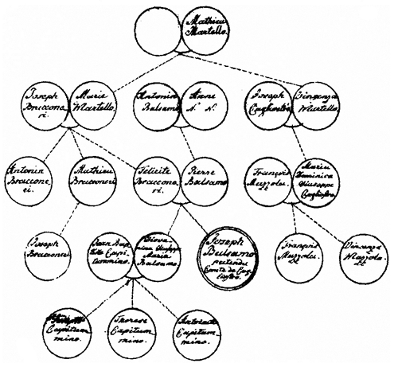
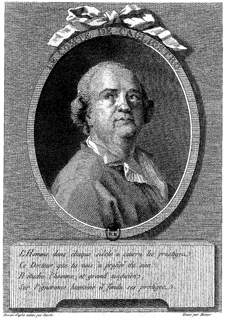

Als ich mich im Jahr 1787 zu Palermo befand, hörte ich an einem öffentlichen Tische manches über Cagliostro, dessen Herkunft und Schicksale reden. Die Palermitaner waren darin einig: daß ein gewisser Joseph Balsamo in ihrer Stadt geboren, wegen mancherlei schlechter Streiche berüchtigt, und verbannt sei. Ob aber dieser mit dem Grafen Cagliostro nur eine Person sei? darüber waren die Meinungen geteilt. Einige, die ihn ehemals gesehen hatten, wollten seine Gestalt in jenem Kupferstiche wieder finden, der bei uns bekannt genug ist und auch nach Palermo gekommen war.
Unter solchen Gesprächen berief sich einer der Gäste auf die Bemühungen, welche ein palermitanischer Rechtsgelehrter übernommen, diese Sache ins Klare zu bringen. Er war durch das französische Ministerium veranlaßt worden, dem Herkommen eines Mannes nachzuspüren, welcher die Frechheit gehabt hatte, vor dem Angesichte Frankreichs, ja man darf wohl sagen, der Welt, bei einem wichtigen und gefährlichen Prozesse die albernsten Märchen vorzubringen.
Stammbaum der Famile
Es habe dieser Rechtsgelehrte, erzählte man, den Stammbaum des Joseph Balsamo aufgestellt und ein erläuterndes Memoire mit beglaubigten Beilagen nach Frankreich abgeschickt, wo man wahrscheinlich davon öffentlichen Gebrauch machen werde.
Ich äußerte den Wunsch, diesen Rechtsgelehrten, von welchem außerdem viel Gutes gesprochen wurde, kennen zu lernen, und der Erzähler erbot sich, mich bei ihm anzumelden und zu ihm zu führen.
Nach einigen Tagen gingen wir hin, und fanden ihn mit seinen Klienten beschäftigt. Als er diese abgefertigt und wir das Frühstück genommen hatten, brachte er ein Manuskript hervor, welches den Stammbaum Cagliostros, die zu dessen Begründung nötigen Dokumente in Abschrift und das Konzept eines Memoire enthielt, das nach Frankreich abgegangen war.
Er legte mir den Stammbaum vor, wie man ihn auf der beigefügten Tafel gezeichnet findet, und gab mir die nötigen Erklärungen darüber, wovon ich hier so viel anführe, als zu leichterer Übersicht desselben nötig ist.
Joseph Balsamos Urgroßvater mütterlicher Seite war Mattheus Martello. Der Geburtsname seiner Urgroßmutter ist unbekannt. Aus dieser Ehe entsprangen zwei Töchter, eine Namens Maria, die an Joseph Bracconeri verheiratet und Großmutter Joseph Balsamos ward. Eine andere, Namens Vincenza, verheiratete sich an Joseph Cagliostro, der von einem kleinen Ort La Noara, acht Meilen von Messina, gebürtig war. Ich bemerke hier, daß zu Messina noch zwei Glockengießer dieses Namens leben. Diese Großtante war in der Folge Pate bei Joseph Balsamo; er erhielt den Taufnamen ihres Mannes, und nahm endlich auswärts auch den Zunamen Cagliostro von seinem Großonkel an.
(?) Devere
Der Graf Cagliostro
Nach einer Zeichnung von Christophe Guérin Kupferstich, um 1785
Die Eheleute Bracconeri hatten drei Kinder, Felicitas, Mattheus und Antonin.
Felicitas ward an Peter Balsamo verheiratet, den Sohn eines Bandhändlers in Palermo, Antonin Balsamo, der vermutlich von jüdischem Geschlecht abstammte. Peter Balsamo, der Vater des berüchtigten Josephs, machte Bankerout und starb in seinem 45sten Jahre. Seine Witwe, welche noch gegenwärtig lebt, gab ihm außer dem benannten Joseph noch eine Tochter, Johanna Joseph-Maria, welche an Johann Baptista Capitummino verheiratet wurde, der mit ihr drei Kinder zeugte und starb.
Die Abstammungen der Seitenverwandten zeigt der Stammbaum deutlich genug, und die Verstorbenen sind mit einem Kreuze bezeichnet.
Das Memoire, welches uns der gefällige Verfasser vorlas und mir, auf mein Ersuchen, einige Tage anvertraute, war auf Taufscheine, Ehekontrakte und Instrumente gegründet, die mit Sorgfalt gesammelt waren. Es enthielt ohngefähr die Umstände (wie ich aus einem Auszug, den ich damals gemacht, ersehe) die uns nunmehr aus den römischen Prozeßakten bekannt geworden sind: daß Joseph Balsamo Anfangs Junii 1743 zu Palermo geboren, von Vincenza Martello, verheirateter Cagliostro, aus der Taufe gehoben sei, daß er in seiner Jugend das Kleid der barmherzigen Brüder genommen, eines Ordens, der besonders Kranke verpflegt, daß er bald viel Geist und Geschick für die Medizin gezeigt; doch aber wegen seiner übeln Aufführung fortgeschickt worden, daß er in Palermo nachher den Zauberer und Schatzgräber gemacht.
Seine große Gabe, alle Hände nachzuahmen, ließ er nicht unbenutzt (so fährt das Memoire fort). Er verfälschte, oder verfertigte vielmehr ein altes Dokument, wodurch das Eigentum einiger Güter in Streit geriet. Er kam in Untersuchung, ins Gefängnis, entfloh und ward edictaliter zitiert. Er reiste durch Calabrien nach Rom, wo er die Tochter eines Gürtlers heiratete. Von Rom kehrte er nach Neapel unter dem Namen Marchese Pelegrini zurück. Er wagte sich wieder nach Palermo, ward erkannt, gefänglich eingezogen und kam nur auf eine Weise los, die wert ist, daß ich sie umständlich erzähle.
Der Sohn eines der ersten sicilianischen Prinzen und großen Güterbesitzers, eines Mannes, der an dem neapolitanischen Hofe ansehnliche Stellen bekleidete, verband mit einem starken Körper und einer unbändigen Gemütsart allen Übermut, zu dem sich der Reiche und Große ohne Bildung, berechtigt glaubt.
Donna Lorenza wußte ihn zu gewinnen, und auf ihn baute der verstellte Marchese Pelegrini seine Sicherheit. Der Prinz zeigte öffentlich, daß er dies angekommene Paar beschütze; aber in welche Wut geriet er, als Joseph Balsamo auf Anrufen der Partei, welche durch seinen Betrug Schaden gelitten, abermals ins Gefängnis gebracht wurde! Er versuchte verschiedene Mittel ihn zu befrein, und da sie ihm nicht gelingen wollten, drohte er im Vorzimmer des Präsidenten, den Advokaten der Gegenpartei aufs grimmigste zu mißhandeln, wenn er nicht sogleich die Verhaftung des Balsamo wieder aufhöbe. Als der gegenseitige Sachwalter sich weigerte, ergriff er ihn, schlug ihn, warf ihn auf die Erde, trat ihn mit Füßen und war kaum von mehrerern Mißhandlungen abzuhalten, als der Präsident selbst auf den Lärm herauseilte und Frieden gebot.
Dieser, ein schwacher, abhängiger Mann, wagte es nicht, den Beleidiger zu bestrafen; die Gegenpartei und ihre Sachwalter wurden kleinmütig, und Balsamo ward in Freiheit gesetzt, ohne daß bei den Akten sich eine Registratur über seine Loslassung befindet, weder wer sie verfügt, noch wie sie geschehen.
Bald darauf entfernte er sich von Palermo und tat verschiedene Reisen, von welchen der Verfasser nur unvollständige Nachrichten geben konnte.
Das Memoire endigte sich mit einem scharfsinnigen Beweise, daß Cagliostro und Balsamo eben dieselbe Person sei, eine These, die damals schwerer zu behaupten war, als sie es jetzt ist, da wir von dem Zusammenhang der Geschichte vollkommen unterrichtet sind.
Hätte ich nicht damals vermuten müssen, daß man in Frankreich einen öffentlichen Gebrauch von jenem Aufsatz machen würde, daß ich ihn vielleicht bei meiner Zurückkunft schon gedruckt anträfe; so wäre es mir erlaubt gewesen, eine Abschrift zu nehmen, und meine Freunde und das Publikum früher von manchen interessanten Umständen zu unterrichten.
Indessen haben wir das meiste, und mehr als jenes Memoire enthalten konnte, von einer Seite her erfahren, von der sonst nur Irrtümer auszuströmen pflegten. Wer hätte geglaubt, daß Rom einmal zur Aufklärung der Welt, zur völligen Entlarvung eines Betrügers so viel beitragen sollte, als es durch die Herausgabe jenes Auszugs aus den Prozeßakten geschehen ist! Denn obgleich diese Schrift weit interessanter sein könnte und sollte: so bleibt sie doch immer ein schönes Dokument in den Händen eines jeden Vernünftigen, der es mit Verdruß ansehen mußte, daß Betrogene, Halbbetrogene und Betrüger diesen Menschen und seine Possenspiele Jahre lang verehrten, sich durch die Gemeinschaft mit ihm über andre erhoben fühlten und von der Höhe ihres gläubigen Dünkels den gesunden Menschenverstand bedauerten, wo nicht geringschätzten.
Wer schwieg nicht gern während dieser Zeit? und auch nur jetzt, nachdem die ganze Sache geendigt und außer Streit gesetzt ist, kann ich es über mich gewinnen, zu Kompletierung der Akten dasjenige, was mir bekannt ist, mitzuteilen.
Als ich in dem Stammbaum so manche Personen, besonders Mutter und Schwester, noch als lebend angegeben fand, bezeigte ich dem Verfasser des Memoire meinen Wunsch sie zu sehen und die Verwandten eines so sonderbaren Menschen kennen zu lernen. Er versetzte, daß es schwer sein werde dazu zu gelangen, indem diese Menschen arm, aber ehrbar und sehr eingezogen lebten, keine Fremden zu sehen gewohnt seien, und der argwöhnische Charakter der Nation sich aus einer solchen Erscheinung allerlei deuten werde; doch wolle er mir seinen Schreiber schicken, der bei der Familie Zutritt habe und durch den er die Nachrichten und Dokumente, woraus der Stammbaum zusammengesetzt worden, erhalten.
Den folgenden Tag erschien der Schreiber und äußerte wegen des Unternehmens einige Bedenklichkeiten. Ich habe, sagte er, bisher immer vermieden, diesen Leuten wieder unter die Augen zu treten: denn um ihre Ehekontrakte, Taufscheine und andere Papiere in die Hände zu bekommen und von selbigen legale Kopien machen zu können, mußte ich mich einer eigenen List bedienen. Ich nahm Gelegenheit von einem Familienstipendio, das irgendwo vakant war, machte ihnen wahrscheinlich, daß der junge Capitummino sich dazu wohl qualifiziere, daß man vor allen Dingen einen Stammbaum aufsetzen müsse, um zu sehen, in wiefern der Knabe darauf Ansprüche machen könne. Es werde freilich nachher alles auf Negoziation ankommen, die ich übernehmen wolle, wenn man mir einen billigen Teil der zu erhaltenden Summe für meine Bemühungen verspräche. Mit Freuden willigten die guten Leute in alles; ich erhielt die nötigen Papiere, die Kopien wurden genommen, der Stammbaum ausgearbeitet und seit der Zeit hüte ich mich, vor ihnen zu erscheinen. Noch vor einigen Wochen wurde mich die alte Capitummino gewahr, und ich wußte mich nur mit der Langsamkeit, womit hier dergleichen Sachen vorwärts gehen, zu entschuldigen.
So sagte der Schreiber. Da ich aber von meinem Vorsatze nicht abging, wurden wir nach einiger Überlegung dahin einig, daß ich mich für einen Engländer ausgeben und der Familie Nachrichten von Cagliostro bringen sollte, der eben aus der Gefangenschaft der Bastille nach London gegangen war.
Zur gesetzten Stunde, es mochte etwa drei Uhr nach Mittag sein, machten wir uns auf den Weg. Das Haus lag in dem Winkel eines Gäßchens nicht weit von der Hauptstraße, il Cassero genannt. Wir stiegen eine elende Treppe hinauf und kamen sogleich in die Küche. Eine Frau von mittlerer Größe, stark und breit, ohne fett zu sein, war beschäftigt das Küchengeschirr aufzuwaschen. Sie war reinlich gekleidet, und schlug, als wir hineintraten, das eine Ende der Schürze hinauf, um vor uns die schmutzige Seite zu verstecken. Sie sah meinen Führer freudig an und sagte: Signor Giovanni, bringen Sie uns gute Nachrichten? Haben Sie etwas ausgerichtet?
Er versetzte: in unsrer Sache hat mirs noch nicht gelingen wollen; hier ist aber ein Fremder, der einen Gruß von Ihrem Bruder bringt, und Ihnen erzählen kann, wie er sich gegenwärtig befindet.
Der Gruß, den ich bringen sollte, war nicht ganz in unsrer Abrede; indessen war die Einleitung einmal gemacht. – Sie kennen meinen Bruder? fragte sie. – Es kennt ihn ganz Europa, versetzte ich: und ich glaube, es wird Ihnen angenehm sein zu hören, daß er sich in Sicherheit und wohl befindet, da Sie bisher wegen seines Schicksals gewiß in Sorgen gewesen sind. – Treten Sie hinein, sagte sie, ich folge Ihnen gleich; und ich trat mit dem Schreiber in das Zimmer.
Es war so groß und hoch, daß es bei uns für einen Saal gelten würde; es schien aber auch beinah die ganze Wohnung der Familie zu sein. Ein einziges Fenster erleuchtete die großen Wände, die einmal Farbe gehabt hatten, und auf denen schwarze Heiligenbilder in goldnen Rahmen herum hingen. Zwei große Betten ohne Vorhänge standen an der einen Wand, ein braunes Schränkchen, das die Gestalt eines Schreibtisches hatte, an der andern. Alte mit Rohr durchflochtene Stühle, deren Lehnen ehemals vergoldet gewesen, standen darneben, und die Backsteine des Fußbodens waren an vielen Stellen tief ausgetreten. Übrigens war alles reinlich und wir näherten uns der Familie, die am andern Ende des Zimmers an dem einzigen Fenster versammelt war.
Indes mein Führer der alten Balsamo, die in der Ecke saß, die Ursache unsers Besuchs erklärte und seine Worte wegen der Taubheit der guten Alten mehrmals laut wiederholte, hatte ich Zeit, das Zimmer und die übrigen Personen zu betrachten. Ein Mädchen von ohngefähr sechzehn Jahren, wohl gewachsen, deren Gesichtszüge durch die Blattern undeutlich geworden waren, stand am Fenster. Neben ihr ein junger Mensch, dessen unangenehme durch die Blattern verzerrte Bildung mir auffiel. In einem Lehnsessel saß, oder lag vielmehr gegen dem Fenster über eine kranke sehr ungestaltete Person, die mit einer Art Schlafsucht behaftet schien.
Als mein Führer sich deutlich gemacht hatte, nötigte man uns zum Sitzen. Die Alte tat einige Fragen an mich, die ich mir aber mußte dolmetschen lassen, eh ich sie beantworten konnte, da mir der sicilianische Dialekt nicht geläufig war.
Ich betrachtete indessen die alte Frau mit Vergnügen. Sie war von mittlerer Größe, aber wohlgebildet; über ihre regelmäßigen Gesichtszüge, die das Alter nicht entstellt hatte, war der Friede verbreitet, dessen gewöhnlich die Menschen genießen, die des Gehörs beraubt sind; der Ton ihrer Stimme war sanft und angenehm.
Ich beantwortete ihre Fragen, und meine Antworten mußten ihr auch wieder verdolmetscht werden.
Die Langsamkeit unsrer Unterredung gab mir Gelegenheit, meine Worte abzumessen. Ich erzählte ihr, daß ihr Sohn in Frankreich losgesprochen worden und sich gegenwärtig in England befinde, wo er wohl aufgenommen sei. Ihre Freude, die sie über diese Nachrichten äußerte, war mit Ausdrücken einer herzlichen Frömmigkeit begleitet, und da sie nun etwas lauter und langsamer sprach, konnte ich sie eher verstehen.
Indessen war ihre Tochter hereingekommen, und hatte sich zu meinem Führer gesetzt, der ihr das, was ich erzählt hatte, getreulich wiederholte. Sie hatte eine reinliche Schürze vorgebunden, und ihre Haare in Ordnung unter das Netz gebracht. Je mehr ich sie ansah und sie mit ihrer Mutter verglich, desto auffallender war mir der Unterschied beider Gestalten. Eine lebhafte gesunde Sinnlichkeit blickte aus der ganzen Gestalt der Tochter hervor, sie mochte eine Frau von vierzig Jahren sein. Mit lebhaften blauen Augen sah sie klug umher, ohne daß ich in ihrem Blick irgend einen Argwohn spüren konnte; indem sie saß, versprach ihre Figur mehr Länge als sie zeigte, wenn sie aufstand; ihre Stellung war determiniert, sie saß mit vorwärts gebogenem Körper und die Hände auf die Kniee gelegt. Übrigens erinnerte mich ihre mehr stumpfe als scharfe Gesichtsbildung an das Bildnis ihres Bruders, das wir in Kupfer kennen. Sie fragte mich verschiedenes über meine Reise, über meine Absicht Sicilien zu sehen und war überzeugt, daß ich gewiß zurück kommen und das Fest der heil. Rosalie mit ihnen feiern würde.
Da indessen die Großmutter wieder einige Fragen an mich getan hatte, und ich ihr zu antworten beschäftigt war, sprach die Tochter halb laut mit meinem Gefährten, doch so, daß ich Anlaß nehmen konnte zu fragen: wovon die Rede sei? Er sagte darauf: Frau Capitummino erzähle ihm, daß ihr Bruder ihr noch vierzehn Unzen schuldig sei; sie habe bei seiner schnellen Abreise von Palermo versetzte Sachen für ihn eingelöset; seit der Zeit aber weder etwas von ihm gehört, noch Geld, noch irgend eine Unterstützung von ihm erhalten, ob er gleich, wie sie höre, große Reichtümer besitze und einen fürstlichen Aufwand mache. Ob ich nicht über mich nehmen wolle, nach meiner Zurückkunft ihn auf eine gute Weise an die Schuld zu erinnern und eine Unterstützung für sie auszuwirken, und ob ich nicht einen Brief mitnehmen oder allenfalls bestellen wolle? Ich erbot mich dazu. Sie fragte: wo ich wohne? Wohin sie mir den Brief zu schicken habe? Ich lehnte ab meine Wohnung zu sagen und erbot mich, den andern Tag gegen Abend den Brief selbst abzuholen.
Sie erzählte mir darauf ihre mißliche Lage: sie sei eine Witwe mit drei Kindern, von denen das eine Mädchen im Kloster erzogen werde; die andre sei hier gegenwärtig und ihr Sohn eben in die Lehrstunde gegangen. Außer diesen drei Kindern habe sie ihre Mutter bei sich, für deren Unterhalt sie sorgen müsse, und überdies habe sie aus christlicher Liebe die unglückliche kranke Person zu sich genommen, die ihre Last noch vergrößere; alle ihre Arbeitsamkeit reiche kaum hin, sich und den Ihrigen das Notdürftige zu verschaffen. Sie wisse zwar, daß Gott diese guten Werke nicht unbelohnt lasse; seufze aber doch sehr unter der Last, die sie schon so lange getragen habe.
Die jungen Leute mischten sich auch ins Gespräch, und die Unterhaltung wurde lebhafter. Indem ich mit den andern sprach, hörte ich, daß die Alte ihre Tochter fragte: ob ich denn auch wohl ihrer heiligen Religion zugetan sei? Ich konnte bemerken, daß die Tochter auf eine kluge Weise der Antwort auszuweichen suchte, indem sie, so viel ich verstand, die Mutter bedeutete: daß der Fremde gut für sie gesinnt zu sein schiene, und daß es sich wohl nicht schicke, jemanden sogleich über diesen Punkt zu befragen.
Da sie hörten, daß ich bald von Palermo abreisen wollte, wurden sie dringender und ersuchten mich, daß ich doch ja wieder kommen möchte; besonders rühmten sie die paradiesischen Tage des Rosalienfestes, dergleichen in der ganzen Welt nicht müsse gesehen und genossen werden.
Mein Begleiter, der schon lange Lust gehabt hatte sich zu entfernen, machte endlich der Unterredung durch seine Gebärden ein Ende, und ich versprach den andern Tag gegen Abend wieder zu kommen und den Brief abzuholen. Mein Begleiter freute sich, daß alles so glücklich gelungen sei, und wir schieden zufrieden auseinander.
Man kann sich den Eindruck denken, den diese arme, fromme, wohlgesinnte Familie auf mich gemacht hatte. Meine Neugierde war befriedigt; aber ihr natürliches und gutes Betragen hatte einen Anteil in mir erregt, der sich durch das Nachdenken noch vermehrte.
Sogleich aber entstand in mir die Sorge wegen des folgenden Tages. Es war natürlich, daß diese Erscheinung, die sie im ersten Augenblicke überrascht hatte, nach meinem Abschiede manches Nachdenken bei ihnen erregen mußte. Durch den Stammbaum war mir bekannt, daß noch mehrere von der Familie lebten; es war natürlich, daß sie ihre Freunde zusammen beriefen, um sich in ihrer Gegenwart dasjenige wiederholen zu lassen, was sie Tags vorher mit Verwundrung von mir gehört hatten. Meine Absicht hatte ich erreicht, und es blieb mir nur noch übrig, dieses Abenteuer auf eine schickliche Weise zu endigen. Ich begab mich daher des andern Tages gleich nach Tische allein in ihre Wohnung. Sie verwunderten sich, da ich hineintrat. Der Brief sei noch nicht fertig, sagten sie, und einige ihrer Verwandten wünschten mich auch kennen zu lernen, welche sich gegen Abend einfinden würden.
Ich versetzte: daß ich morgen früh schon abreisen müsse, daß ich noch Visiten zu machen, auch einzupacken habe und also lieber früher als gar nicht hätte kommen wollen.
Indessen trat der Sohn herein, den ich des Tags vorher nicht gesehen hatte. Er glich seiner Schwester an Wuchs und Bildung. Er brachte den Brief, den man mir mitgeben wollte, den er, wie es in jenen Gegenden gewöhnlich ist, außer dem Hause bei einem der öffentlich sitzenden Notarien hatte schreiben lassen. Der junge Mensch hatte ein stilles, trauriges und bescheidenes Wesen, erkundigte sich nach seinem Oheim, fragte nach dessen Reichtum und Ausgaben, und setzte traurig hinzu: warum er seine Familie doch so ganz vergessen haben möchte? Es wäre unser größtes Glück, fuhr er fort, wenn er einmal hieher käme und sich unsrer annehmen wollte; aber, fuhr er fort, wie hat er Ihnen entdeckt, daß er noch Anverwandte in Palermo habe? Man sagt, daß er uns überall verleugne und sich für einen Mann von großer Geburt ausgebe. Ich beantwortete diese Frage, welche durch die Unvorsichtigkeit meines Führers bei unserm ersten Eintritte veranlaßt worden war, auf eine Weise, die es wahrscheinlich machte, daß der Oheim, wenn er gleich gegen das Publikum Ursache habe, seine Abkunft zu verbergen, doch gegen seine Freunde und Bekannte kein Geheimnis daraus mache.
Die Schwester, welche während dieser Unterredung herbeigetreten war und durch die Gegenwart des Bruders, wahrscheinlich auch durch die Abwesenheit des gestrigen Freundes, mehr Mut bekam, fing gleichfalls an, sehr artig und lebhaft zu sprechen. Sie baten sehr, sie ihrem Onkel, wenn ich ihm schriebe, zu empfehlen; eben so sehr aber, wenn ich die Reise durchs Königreich gemacht, wieder zu kommen und das Rosalienfest mit ihnen zu begehen.
Die Mutter stimmte mit den Kindern ein. Mein Herr, sagte sie, ob es sich zwar eigentlich nicht schickt, da ich eine erwachsene Tochter habe, fremde Männer in meinem Hause zu sehen, und man Ursache hat sich so wohl vor der Gefahr als der Nachrede zu hüten; so sollen Sie uns doch immer willkommen sein, wenn Sie in diese Stadt zurückkehren.
O ja, versetzten die Kinder, wir wollen den Herrn beim Feste herumführen, wir wollen ihm alles zeigen, wir wollen uns auf die Gerüste setzen, wo wir die Feierlichkeit am besten sehen können. Wie wird er sich über den großen Wagen und besonders über die prächtige Illumination freuen!
Indessen hatte die Großmutter den Brief gelesen und wieder gelesen. Da sie hörte, daß ich Abschied nehmen wollte, stand sie auf und übergab mir das zusammengefaltete Papier. Sagen Sie meinem Sohn, fing sie mit einer edlen Lebhaftigkeit, ja einer Art von Begeistrung an: sagen Sie meinem Sohne, wie glücklich mich die Nachricht gemacht hat, die Sie mir von ihm gebracht haben; sagen Sie ihm, daß ich ihn so an mein Herz schließe – hier streckte sie die Arme aus einander und drückte sie wieder auf ihrer Brust zusammen – daß ich täglich Gott und unsre heil. Jungfrau für ihn im Gebet anflehe, daß ich ihm und seiner Frau meinen Segen gebe, und daß ich nur wünsche ihn vor meinem Ende noch einmal mit diesen Augen zu sehen, die so viel Tränen über ihn vergossen haben.
Die eigne Zierlichkeit der italienischen Sprache begünstigte die Wahl und die edle Stellung dieser Worte, welche noch überdies von lebhaften Gebärden begleitet wurden, mit welchen jene Nation über ihre Äußerungen einen unglaublichen Reiz zu verbreiten gewohnt ist.
Ich nahm nicht ohne Rührung von ihnen Abschied. Sie reichten mir alle die Hände, die Kinder führten mich hinaus und indes ich die Treppe hinunter ging, sprangen sie auf den Balkon des Fensters, das aus der Küche auf die Straße ging, riefen mir nach, winkten mir Grüße zu und wiederholten: daß ich ja nicht vergessen möchte wieder zu kommen. Ich sah sie noch auf dem Balkon stehen, als ich um die Ecke herum ging.
Ich brauche nicht zu sagen, daß der Anteil, den ich an dieser Familie nahm, den lebhaften Wunsch in mir erregte, ihr nützlich zu sein und ihrem Bedürfnis zu Hülfe zu kommen. Sie war nun durch mich abermals hintergangen und ihre Hoffnungen auf eine unerwartete Hülfe waren durch die Neugierde des nördlichen Europas auf dem Wege, zum zweitenmal getäuscht zu werden.
Mein erster Vorsatz war, ihnen vor meiner Abreise jene vierzehn Unzen zuzustellen, die ihnen der Flüchtling schuldig geblieben, und durch die Vermutung, daß ich diese Summe von ihm wieder zu erhalten hoffte, mein Geschenk zu bedecken; allein als ich zu Hause meine Rechnung machte, meine Kasse und Papiere überschlug, sah ich wohl, daß in einem Lande, wo durch den Mangel von Kommunikation die Entfernung gleichsam ins Unendliche wächst, ich mich selbst in Verlegenheit setzen würde, wenn ich mir anmaßte, die Ungerechtigkeit eines frechen Menschen durch eine herzliche Gutmütigkeit zu verbessern.
Ich reiste von Palermo weg, ohne wieder zurückzukehren, und ohnerachtet der großen Zerstreuung meiner sicilianischen und übrigen italienischen Reise, verlor ich jenen einfachen Eindruck nicht aus meiner Seele.
Ich kam in mein Vaterland zurück, und als jener Brief unter andern Papieren, die von Neapel den Weg zur See gemacht hatten, sich endlich auch vorfand, gab es Gelegenheit, von diesem, wie von andern Abenteuern zu sprechen.
Hier ist eine Übersetzung jenes Blattes, durch welche ich das Eigentümliche des Originals mit Willen durchscheinen lasse:
Geliebtester Sohn!
Den 16ten April 1787 hatte ich Nachricht von Dir durch Herrn Wilton, und ich kann Dir nicht ausdrücken, wie tröstlich sie mir gewesen ist: denn seit Du Dich aus Frankreich entfernt hattest, konnte ich nichts mehr von Dir erfahren.
Lieber Sohn, ich bitte Dich, meiner nicht zu vergessen: denn ich bin sehr arm und von allen Verwandten verlassen, außer von meiner Tochter Maria Anna, Deiner Schwester, in deren Hause ich lebe. Sie kann mir nicht den völligen Unterhalt geben, aber sie tut, was sie kann; sie ist Witwe mit drei Kindern; eine Tochter ist im Kloster der heil. Catharina, zwei andere sind zu Hause.
Ich wiederhole, lieber Sohn, meine Bitte, schick mir nur so viel, daß ich mir einigermaßen helfen kann, indem ich nicht einmal die nötigen Kleidungsstücke habe, um die Pflichten einer katholischen Christin zu erfüllen; denn mein Mantel und Überkleid sind ganz zerrissen.
Wenn du mir etwas schickest oder auch nur einen Brief schreibst, so sende ihn nicht durch die Post, sondern übers Meer, weil Don Matheo (Bracconeri), mein Bruder, Oberpostcommissarius ist.
Lieber Sohn, ich bitte Dich, mir des Tages einen Tari auszusetzen, damit Deiner Schwester einigermaßen die Last abgenommen werde und damit ich nicht vor Mangel umkomme. Erinnere Dich des göttlichen Gebotes, und hilf einer armen Mutter, die aufs Letzte gebracht ist. Ich gebe Dir meinen Segen und umarme Dich von Herzen, auch so Donna Lorenza Deine Frau.
Deine Schwester umarmt Dich von Herzen und ihre Kinder küssen Dir die Hände. Deine Mutter, die Dich zärtlich liebt und die Dich an ihr Herz drückt
Palermo, den 18ten April 1787
Felice Balsamo.
Verehrungswürdige Personen, denen ich dieses Dokument vorlegte und die Geschichte erzählte, teilten meine Empfindungen und setzten mich in den Stand, jener unglücklichen Familie meine Schuld abtragen zu können und ihr eine Summe zu übermachen, die sie zu Ende des Jahres 1788 erhielt, und von deren Wirkung folgender Brief ein Zeugnis ablegt:
Palermo, den 25. Dezbr. 1788
Geliebtester Sohn!
Lieber geliebter Bruder!
Die Freude, die wir gehabt haben, zu hören, daß Ihr lebt und Euch wohl befindet, können wir mit keiner Feder ausdrücken. Ihr habt eine Mutter und eine Schwester, die von allen Menschen verlassen sind und zwei Töchter und einen Sohn zu erziehen haben, durch die Hülfe, die Ihr ihnen übersendet, mit der größten Freude und Vergnügen erfüllt. Denn nachdem Herr Jakob Joff, ein englischer Kaufmann, sich viele Mühe gegeben, die Frau Joseph-Maria Capitummino, geborne Balsamo, aufzusuchen, weil man mich nur gewöhnlich Marana Capitummino nennt, fand er uns endlich in einem kleinen Hause, wo wir mit der gebührenden Schicklichkeit leben. Er zeigte uns an, daß Ihr uns eine Summe Geldes anweisen lassen, und daß eine Quittung dabei sei, die ich, Eure Schwester, unterzeichnen sollte, wie es auch geschehen ist. Denn er hat uns das Geld schon eingehändigt, und der günstige Wechselcours hat uns noch einigen Vorteil gebracht.
Nun bedenkt, mit welchem Vergnügen wir eine solche Summe empfangen haben, zu einer Zeit, da wir im Begriff waren, die Weihnachtsfeiertage zu begehen, ohne Hoffnung irgend einer Beihülfe.
Unser Mensch gewordene Jesus hat Euer Herz bewegt, uns diese Summe zu übermachen, die nicht allein gedient hat, unsern Hunger zu stillen, sondern auch uns zu bedecken, weil uns wirklich alles mangelte.
Es würde uns die größte Zufriedenheit sein, wenn Ihr unser Verlangen stilltet, und wir Euch nochmals sehen könnten, besonders mir, Eurer Mutter, die nicht aufhört das Unglück zu beweinen, immer von einem einzigen Sohne entfernt zu sein, den ich vor meinem Tode noch einmal sehen möchte.
Wenn aber dieses wegen Eurer Verhältnisse nicht geschehen könnte, so unterlaßt doch nicht meinem Mangel zu Hülfe zu kommen, besonders da Ihr so einen trefflichen Kanal gefunden habt und einen so genauen und redlichen Kaufmann, der, ohne daß wir davon benachrichtigt waren, und alles in seiner Hand lag, uns redlich aufgesucht und treulich die übersendete Summe ausgeliefert hat.
Für Euch will das wohl nichts sagen; aber uns scheint eine jede Beihülfe ein Schatz. Eure Schwester hat zwei erwachsene Mädchen und ihr Sohn braucht auch Unterstützung. Ihr wißt, daß sie nichts besitzen, und welches treffliche Werk würdet Ihr tun, wenn Ihr so viel sendetet, als nötig ist sie schicklich auszustatten.
Gott erhalte Euch bei guter Gesundheit! wir rufen ihn dankbar an und wünschen, daß er Euch das Glück erhalten möge, dessen Ihr genießt, und daß er Euer Herz bewegen möge, sich unsrer zu erinnern. In seinem Namen segne ich Euch und Eure Frau als liebevolle Mutter, ich umarme Euch, ich Eure Schwester, dasselbe tut der Vetter Joseph (Bracconeri) der diesen Brief geschrieben hat, wir bitten Euch um Euren Segen, wie es auch die beiden Schwestern Antonine und Therese tun. Wir umarmen Euch und nennen uns
Die Unterschriften dieses Briefes sind eigenhändig.
Ich hatte die Summe ohne Brief und ohne Anzeige, von wem sie eigentlich komme, übermachen lassen; um so natürlicher war ihr Irrtum und um so wahrscheinlicher ihre Hoffnungen für die Zukunft.
Jetzt, da sie von der Gefangenschaft und Verurteilung ihres Verwandten unterrichtet sind, bleibt mir noch übrig, zu ihrer Aufklärung und zu ihrem Troste etwas zu tun. Ich habe noch eine Summe für sie in Händen, die ich ihnen überschicken und zugleich das wahre Verhältnis anzeigen will. Sollten einige meiner Freunde, sollten einige meiner reichen und edeln Landsleute mir das Vergnügen machen und jene kleine Summe, die noch bei mir liegt, durch Beiträge vermehren wollen: so bitte ich, mir solche vor Michael zuzuschicken und an dem Dank und der Zufriedenheit einer guten Familie Teil zu nehmen, aus welcher eins der sonderbarsten Ungeheuer entsprungen ist, welche in unserm Jahrhundert erschienen sind.
Ich werde nicht verfehlen den weitern Verlauf dieser Geschichte und die Nachricht von dem Zustande, worin meine nächste Sendung die Familie antreffen wird, öffentlich bekannt zu machen, und vielleicht alsdann einige Anmerkungen hinzufügen, die sich mir bei dieser Geschichte aufgedrungen haben, deren ich mich aber gegenwärtig enthalte, um meinen Lesern in ihrem ersten Urteile nicht vorzugreifen.
Die Beschränktheit worin die Menschen leben, der Druck der mehr oder weniger auf ihnen liegt macht sie alle wo nicht immer doch sehr oft hülfsbedürftig und da die echten nächsten, vernünftigen Mittel der Hülfe oft fehlen so ist es kein Wunder, daß die Sehnsucht sich nach fernen, unechten, unvernünftigen Mitteln umsehe. Es ist deshalb einem Menschen so leicht eine große Anzahl an sich zu ziehen und zu beherrschen wenn er nur ihrer dringenden Not abzuhelfen und ihre Übel mit Hoffnung zu lindern versteht. Wir sehen daher kaum Einen Großkophta entlarvt ja eingesperrt so sehen wir schon einen andern wieder entstehen. Und da nun einmal diese Geschöpfe aus der sittlichen Welt nicht zu vertilgen sind, so ist es wenigstens rätlich, von ihnen so viel man kann sich zu unterrichten und ihre Wirkungen wo nicht im Ganzen doch in der Nähe zu hindern.
Mittwoch d. 1. Jul. 95. Jena.
Hufeland Lebenskraft. Brandis. Darvin. Broun. Weickert. Jakobs empirische Psychologie. Reil.
Händel der Bremenser in Hennings Hause.
d. 2 Juli 1795. Von Jena. Mittag in Pößneck. Das Städtchen scheint einen guten Stadtrat zu haben, es ist eine Chaussee angelegt, wovon der Stadtrat auch das Chausseegeld einnimmt, sie denken auch das offne Wasser in der Stadt zu überwölben; überhaupt ist es ein nahrhaftes Städtchen, in welchem sich viel Tuchfabriken befinden, auch sind Gerber daselbst, wie in dem benachbarten Kahla. Ein Fabrikant, der Seige heißt, baut außerhalb der Stadt nach Schleiz zu ein großes Gebäude.
Außer dem bekannten Ton bei Göschwitz ist der Weg bis Pößneck sandig, nach Schleiz zu fängt der Tonschiefer an, der, indem er auf seiner Oberfläche verwittert, sehr guten Feldbau zuläßt.
In Schleiz im blauen Engel übernacht.
Beim Schloß ist ein schönes Vorwerk, der Graf hat noch zehn andere Güter im Lande, die er durch Voigte bewirtschaften läßt; es scheint eine Administration um so ehr möglich, als die Landesart durchaus überein ist. Die Schäfereien sind besonders verpachtet nebst den zum Futter nötigen Wiesen, der Voigt hat eine gewisse Besoldung, von der er das Gesinde mit halten muß, ingleichen gewisse Deputatstücke. Er hat die Kühe im Pacht und gibt von jeder jährlich 7 Rtl. Er besorgt den Feldbau, zwei Kornschreiber unter der Aufsicht einiger Räte besorgen das Übrige, worüber nähere Erkundigung einzuziehen.
Das Feld besteht aus leicht abhängigem Boden, in den Mulden sind die Wiesen, doch sieht man in der Gegend, durch die man fährt, wenig Wasser.
Mühldorf den Grafen Kospoth gehörig, scheint daher seinen Namen, von der in der Gegend sehr notwendigen Mühle erhalten zu haben.
Die von Müffling haben mehrere Güter in dieser Gegend.
d. 3ten Mittags in Plauen; der Postmeister Ermisch ist ein wohlhabender Mann und hat eine starke Familie von 11 Kindern.
Der Ort ist nahrhaft und hat schöne Mosselin Fabriken. Überhaupt stehen die Orte in dieser Gegend gut, weil sie große Fluren und guten Feldbau haben.
Ich fand am Wege Braunstein und Granit; man sagte mir, sie brächen bei Bäringen, in Trieb. Die Mühlsteine, die sie in dieser Gegend brauchen, kommen von Neukirchen. Der Tonschiefer fährt in allen seinen Abänderungen fort, und verwittert meistens zu sehr kleinen Teilen. Sowohl die Frucht als wie die Fichtenwälder gedeihen sehr gut; ich sollte denken, wenn mans mit Mist zwingen könnte, so müßte der Fruchtbau auf einen hohen Grad zu treiben sein. In diesen Gegenden sieht man keine Futterkräuter, aber auch keine Leede, alles ist bebaut oder Wald.
Abends Adorf im Posthaus. Bei verschiedenen Mädchens bemerkte ich eine wunderliche Bildung der Nase, sie ist spitz unterwärts gezogen und vor den Läppchen eingedrückt.
d. 4ten früh daselbst weg, bei Schönbach hält man an, den Koffer versiegeln zu lassen, das wohlgelegene Gut gehört den H. v. Korb.
Gleich hinter Schönbach hört der Tonschiefer auf, man kommt in einen guten fruchtbaren Boden, der aus einer gelben, gelbroten, kalkigtonigten Erde mit mäßigen Quarzstücken bestehet. Die Früchte stehen gut darauf und man findet hier viel Kleebau; auch werden die Ränder und Leeden umgerissen. Dieser Boden entstehet durch Verwitterung des Glimmerschiefers, der die Gebirgsart dieser Gegend ausmacht, und sowohl die Farbe des Erdreichs als auch die Eisensteine, die man darinnen findet, scheinen sich von den Eisengranaten herzuschreiben, die in der Vermischung des Glimmerschiefers stecken; auch hat sich diese Verwitterung wieder teilweise zu einem Konglomerat zusammen gesetzt. Hinter Zwote bis Karlsbad scheint das Gebürg aus einem Sandstein zu bestehen, der ungleich verwittert, die härteren Stücke bleiben liegen, indem die aufgelösten vom Wasser fortgeführt werden. Die Wege werden dadurch abscheulich, der Wert des Bodens ist sehr abwechselnd sowie die Gegend. Um Zwote wird viel Hopfen gebaut. Bei Karlsbad Granit.
Johann Friedrich Bolt
August Wilhelm Iffland
Kupferstich, 1798
Ich hatte lebhaft gewünscht Ifflanden zu sehen, und er hatte die Freundlichkeit mich zu besuchen; seine Gegenwart setzte mich in ein angenehmes Erstaunen. Er war etwas über zwanzig Jahr alt, von mittlerer Größe, wohlproportioniertem Körperbau, behaglich ohne weich zu sein; so war auch sein Gesicht, rund und voll, heiter ohne gerade zuvorkommender Miene. Dabei ein Paar Augen, ganz einzige! Ich konnte ihm meine Verwunderung nicht verbergen maskieren beliebte und Jahre sich anlöge die noch weit genug von ihm entfernt seien. Er solle der Vorzüge seiner Jugend genießen; im Fache junger Liebhaber, junger Helden müsse er lange Zeit das Publikum entzücken und verdienten unabläßlichen Beifall sich zueignen. Ob er gleich nicht meiner Meinung schien und sie als allzugünstig von sich ablehnte, so konnten ihm meine Zudringlichkeiten doch nur schmeichelhaft sein; darauf im sinnigen Hin- und Widerreden über sein Talent, seine Denkweise, seine Vorsätze, verschlang sich das Gespräch bis zum Ende, da wir denn beide, wohlzufrieden miteinander, für diesmal Abschied nahmen.
Nachdem meine geliebte Mutter, Frau Catharina Elisabetha Goethe Wittib zu Frankfurt am Main, als meine einzige Noterbin, durch ein unterm 17ten Juni dieses Jahres ausgestelltes, im Original hier beiliegendes Instrument, auf meine sämtliche Erbschaft renunziiert; so habe ich Joh. Wolfg. v. Goethe S. W. G. R. meinen letzten Willen hiermit aufzusetzen nicht versäumen wollen.
Ich setze nämlich den mit meiner Freundin und vieljährigen Hausgenossin, Christianen Vulpius, erzeugten Sohn August zu meinem Universal Erben, titulo institutionis honorabili hiermit ein; seiner erstgedachten Mutter hingegen vermache ich den Nießbrauch alles dessen was ich, in hiesigen Landen, zur Zeit meines Todes besitze, dergestalt daß sie zeitlebens in dem ungestörten Besitz desselben bleibe und davon die Einkünfte erhebe ohne usufruktuarische Kaution zu bestellen, doch unter der Bedingung daß sie auf die Erziehung unsres Sohnes mütterlich das nötige verwende.
1. Es bleibt ihr also überlassen in meinem Hause, auf dem Frauenplan, sich und ihrem Sohne ein Quartier vorzubehalten, und das übrige zu vermieten,
2. wegen Benutzung des Gartens am Sterne nach ihrer Überzeugung zu handeln,
3. das sich vorfindende bare Geld nach den Umständen zu gebrauchen und zu nutzen
4. auch allenfalls von meinem Mobiliar Vermögen, als Büchern Kunst und Naturalien Sammlungen einiges zu veräußern anzulegen und zu verwenden.
Da jedoch bei den zwei letzten Punkten die Mitwirkung, Einstimmung und Direktion des H. Vormundes meines Sohnes unentbehrlich ist; so bestelle ich zu einem solchen H. Christ. Gottl. Voigt, Herzogl. Sachsen Weimarischen Geh. Rat, mit dem Ersuchen: seine für mich hegende Freundschaft auf meine Nachlassenschaft nun zu übertragen und auch das Geschäft eines Exekutors dieses Testaments gefällig zu übernehmen.
Sollte ferner meine Frau Mutter mit Tode abgehen, welche mein väterliches, mir schon zugefallenes Vermögen noch gegenwärtig besitzt und genießt, so ersuche ich gedachten H. Vormund dasselbe in Obsorge zu nehmen, das Geld nach Ermessen zu nutzen, auch drei vierteile der jährigen Einkünfte zum besten meines Sohnes zu verwenden, den letzten vierten Teil aber dessen Mutter zu ihrer freien Disposition abzugeben. Wobei ihr jedoch der obengeordnete Nießbrauch ungeschmälert verbleibt.
Auf gleiche Weise wird gedachter H. Vormund das, aus einer vollständigen Ausgabe meiner Werke allenfalls zu erlösende, Kapital an sich nehmen und mit den Einkünften wie vorgesagt verfahren.
Sollte diesem meinem letzten Willen an der sonst nach der Schärfe der Rechte erforderlichen Solennität etwas abgehen, so will ich jedoch daß selbiger als ein Kodizill, Fideikommiß, donatio mortis causa oder als eine andre Disposition wie dieselbe zu Recht am kräftigsten und beständigsten geordnet werden soll oder mag, gültig und kräftig sei und auf keine Weise dawider gehandelt werde. Wie ich mir denn auch vorbehalte allenfalls durch Kodizille dieser allgemeinen Verordnung noch einzelne Dispositionen hinzuzufügen.
Zu dessen mehrerer Urkund und Beglaubigung habe ich dieses mein Testament und letzten Willen eigenhändig geschrieben unterschrieben und mit meinem Petschaft besiegelt.
Immer tätiger nach innen und außen fortwirkender poetischer Bildungstrieb macht den Mittelpunkt und die Base seiner Existenz; hat man den gefaßt, so lösen sich alle übrigen anscheinenden Widersprüche. Da dieser Trieb rastlos ist so muß er um sich nicht stofflos selbst zu verzehren sich nach außen wenden und da er nicht beschauend sondern nur praktisch ist nach außen gerichtet entgegen wirken. Daher die vielen falschen Tendenzen zur bildenden Kunst zu der er kein Organ, zum tätigen Leben wozu er keine Biegsamkeit, zu den Wissenschaften wozu er nicht genug Beharrlichkeit hat; da er sich aber gegen alle drei bildend verhält auf Realität des Stoffs und Gehalts und auf Einheit und Schicklichkeit der Form überall dringen muß so sind selbst diese falschen Richtungen des Strebens nicht unfruchtbar nach außen und innen; in den bildenden Künsten arbeitet er so lange bis er sich den Begriff sowohl der Gegenstände als der Behandlung eigen machte und auf den Standpunkt gelangte wo er sie zugleich übersehen und seine Unfähigkeit dazu einsehen konnte, seine teilnehmende Betrachtung ist dadurch erst rein geworden; in Geschäften ist er brauchbar wenn dasselbe einer gewissen Folge bedarf und zuletzt auf irgend eine Weise ein dauerndes Werk daraus entspringt oder wenigstens unter weges immer etwas gebildetes erscheint; bei Hindernissen hat er keine Biegsamkeit aber er gibt nach er widersteht mit Gewalt er dauert aus oder er wirft weg je nachdem seine Überzeugung oder seine Stimmung es ihm im Augenblicke gebieten; er kann alles geschehen lassen was geschieht und was Bedürfnis Kunst und Handwerk hervorbringen, nur dann muß er die Augen wegkehren, wenn die Menschen nach Instinkt handeln und nach Zwecken zu handeln sich anmaßen. Seitdem er hat einsehen lernen daß es bei den Wissenschaften mehr auf die Bildung des Geists der sie behandelt als auf die Gegenstände selbst ankommt seitdem hat er das was sonst nur ein zufälliges unbestimmtes Streben war, hat er dieser Geistestätigkeit nicht entsagt sondern sie nur mehr reguliert und lieber gewonnen; so wie er sich jenen andern beiden Tendenzen die ihm teils habituell teils durch Verhältnisse unerläßlich geworden sich nicht ganz entzieht sondern sie nur mit mehr Bewußtsein und in der Beschränkung die er kennt, gelegentlich ausübt um so mehr da das was eine Geisteskraft mäßig ausbildet einer jeden andern zu statten kommt. Den besondern Charakter seines poetischen Bildungstriebes mögen andere bezeichnen; leider hat sich seine Natur sowohl dem Stoff als der Form nach durch viele Hindernisse und Schwierigkeiten ausgebildet und kann erst spät mit einigem Bewußtsein wirken indes die Zeit der größten Energie vorüber ist. Eine Besonderheit die ihn sowohl als Künstler als auch als Menschen immer bestimmt ist die Reizbarkeit und Beweglichkeit welche sogleich die Stimmung von dem gegenwärtigen Gegenstand empfängt, und ihn also entweder fliehen oder sich mit ihm vereinigen muß; so ist es mit Büchern mit Menschen und Gesellschaften, er darf nicht lesen ohne durch das Buch gestimmt zu werden er ist nicht gestimmt ohne daß er, die Richtung sei ihm so wenig eigen als möglich, tätig dagegen zu wirken und etwas ähnliches hervorzubringen strebt.